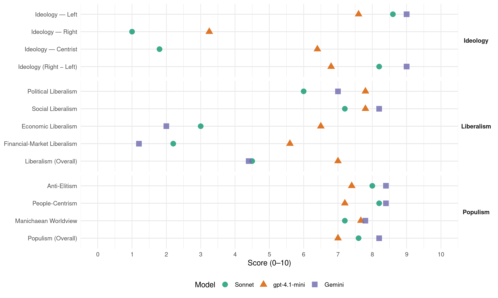

Alianza PAIS (Ecuador, 2013)
manifesto_id 154322_201302
Get full text: This site shows derived annotations and short verbatim quotes only. The full manifesto text is © Manifesto Project / WZB — obtain it via manifesto-project.wzb.eu using the manifesto_id above.
Headline scores
| Dimension | Sonnet | gpt-4.1-mini | Gemini |
|---|---|---|---|
| Populism (Overall) | 7.6 | 7.0 | 8.2 |
| Anti-Elitism | 8.0 | 7.4 | 8.4 |
| People-Centrism | 8.2 | 7.2 | 8.4 |
| Manichaean Worldview | 7.2 | 7.7 | 7.8 |
| Ideology (Right − Left) | 8.2 | 6.8 | 9.0 |
| Liberalism (Overall) | 4.5 | 7.0 | 4.4 |
| Political Liberalism | 6.0 | 7.8 | 7.0 |
| Social Liberalism | 7.2 | 7.8 | 8.2 |
| Economic Liberalism | 3.0 | 6.5 | 2.0 |
| Financial-Market Liberalism | 2.2 | 5.6 | 1.2 |
Evidence per dimension
Economic Liberalism
Gemini · score 2.0 · verified · chunk 1
“no nos sometimos al “dios mercado””
En el marco de esta lucha de poder, impulsamos una relación equilibrada entre sociedad, Estado y mercado. No nos sometimos al “dios mercado”, sacramentado por nuestros opositores
Gemini · score 2.0 · verified · chunk 2
“rechaza modelos reduccionistas como los tratados”
Bajo esta visión, el Ecuador rechaza modelos reduccionistas como los tratados de libre comercio (TLC) que promueven
Gemini · score 2.0 · verified · chunk 3
“rechaza modelos reduccionistas como los tratados de libre comercio”
bajo esta visión, el Ecuador rechaza modelos reduccionistas como los tratados de libre comercio (TLC) que promueven los intereses de las grandes transnacionales
Gemini · score 2.0 · verified · chunk 4
“des-regulación del ámbito mediático y su consecuente”
Una de las principales estrategias de los gobiernos neoliberales fue la des-regulación del ámbito mediático y su consecuente abandono a los determinismos del mercado
Gemini · score 2.0 · verified · chunk 5
“Regular el mercado del suelo”
Establecer políticas que permitan la redistribución de la renta asociada al uso del suelo para el logro de una mayor equidad e inclusión. Regular el mercado del suelo.
gpt-4.1-mini · score 7.0 · verified · chunk 1
“inversión pública es un motor de la economía”
Ahora la inversión pública es un motor de la economía que se complementa con la inversión privada. Esta planificación de los recursos nos permite enfrentar en forma adecuada las recurrentes crisis económicas y financieras internacionales, y reduce nuestra dependencia externa.
gpt-4.1-mini · score 5.0 · mixed · chunk 2
“regular y controlar al capital financiero”
Vamos a continuar con la regulación y control al capital financiero, para que nunca más se ponga en riesgo nuestros depósitos, para que nunca más haya otra crisis financiera.
gpt-4.1-mini · score 6.0 · verified · chunk 3
“impulsar una estrategia para atraer inversiones productivas extranjeras que permitan la transferencia de conocimientos”
Impulsar una estrategia para atraer inversiones productivas extranjeras que permitan la transferencia de conocimientos, la desagregación e innovación tecnológica, en concordancia con los objetivos nacionales y la legislación interna, bajo la lógica de una rentabilidad justa, el pago de impuestos, y la no externalización de costos ambientales.
gpt-4.1-mini · score 6.0 · verified · chunk 4
“la transformación productiva será genuinamente “verde país””
La transformación productiva será genuinamente “verde país” porque tendrá mayor valor económico, social y ambiental. Esto se logrará profundizando el uso sostenible del patrimonio natural y sus recursos naturales, la inserción de tecnologías ambientalmente limpias, la ampliación de la eficiencia energética y de las energías renovables, la prevención, control y mitigación de la contaminación.
gpt-4.1-mini · score 7.0 · verified · chunk 5
“promueve la competitividad”
la de Regulación y Control del Poder del Mercado, que previene y sanciona las prácticas monopólicas y promueve la competitividad; la de Economía Popular y Solidaria, que fomenta a sus actores y su sistema financiero; la de Empresas Públicas, que permite un desarrollo adecuado de los sectores estratégicos; la de Producción, Comercio e Inversiones, que impulsa e incentiva la producción de mayor valor agregado;
Sonnet · score 3.0 · verified · chunk 1
“No nos sometimos al ‘dios mercado’”
En el marco de esta lucha de poder, impulsamos una relación equilibrada entre sociedad, Estado y mercado. No nos sometimos al ‘dios mercado’, sacramentado por nuestros opositores, por la gran banca y la burguesía
Sonnet · score 3.0 · verified · chunk 2
“Rechazamos modelos reduccionistas como los tratados de libre comercio”
el Ecuador rechaza modelos reduccionistas como los tratados de libre comercio (TLC) que promueven los intereses de las grandes transnacionales
Sonnet · score 3.0 · verified · chunk 3
“rechaza modelos reduccionistas como los tratados de libre comercio”
el Ecuador rechaza modelos reduccionistas como los tratados de libre comercio (TLC) que promueven los intereses de las grandes transnacionales
Sonnet · score 3.0 · verified · chunk 4
“lucha contra la desestatización de la economía y la desregulación de los mercados”
proseguir con la lucha contra la desestatización de la economía y la desregulación de los mercados y, por el otro, con las reformas ligadas a la racionalización de la administración pública
Sonnet · score 4.0 · mixed · chunk 5
“previene y sanciona las prácticas monopólicas”
la de Regulación y Control del Poder del Mercado, que previene y sanciona las prácticas monopólicas y promueve la competitividad
Financial-Market Liberalism
Gemini · score 1.0 · verified · chunk 1
“el capital financiero se somete a rigurosos mecanismos de control”
Ahora el capital financiero se somete a rigurosos mecanismos de control y regulación, pues nunca más permitiremos un nuevo salvataje bancario
Gemini · score 1.0 · verified · chunk 2
“regulación y control al capital financiero, para”
Vamos a continuar con la regulación y control al capital financiero, para que nunca más se ponga en riesgo nuestros
Gemini · score 2.0 · verified · chunk 3
“incremento se lo hará con las utilidades de la banca”
de manera revolucionaria e inédita, este incremento se lo hará con las utilidades de los que más tienen (la banca).
Gemini · score 1.0 · verified · chunk 4
“Estado capturado por la banca o secuestrado”
Un pueblo que no permita nunca más un Estado capturado por la banca o secuestrado por las empresas privadas o subordinado a los intereses extranjeros.
Gemini · score 1.0 · verified · chunk 5
“impuesto a las transacciones financieras internacionales”
el mecanismo de Emisiones Netas Evitadas (ENE), el impuesto Daly-Correa, la emisión de Derechos Especiales de Giro, el impuesto a las transacciones financieras internacionales
gpt-4.1-mini · score 6.0 · verified · chunk 1
“política de regulación bancaria y el fin de la autonomía”
Sus intereses fueron apartados del núcleo central de la agenda pública mediante la renegociación de la deuda externa, una activa política de regulación bancaria y el fin de la autonomía de una banca central históricamente rendida a los pies de los intereses especulativos.
gpt-4.1-mini · score 6.0 · verified · chunk 2
“regulación y control a la banca, seguros y otras instituciones financieras”
Continuar con la regulación y el control a la banca, seguros y otras instituciones financieras en coherencia con los objetivos macro y microeconómicos- limitando su poder económico y su vinculación con el poder político.
gpt-4.1-mini · score 4.0 · verified · chunk 3
“rechazar negociaciones en ámbitos multilaterales y bilaterales que en nombre de la “no discriminación” signifiquen de hecho el abandono del Trato Especial y Diferenciado”
Rechazar negociaciones en ámbitos multilaterales y bilaterales que en nombre de la “no discriminación” (Trato Nacional y Nación más Favorecida) signifiquen de hecho el abandono del Trato Especial y Diferenciado (TED), comprometido por los países desarrollados a los países en desarrollo (Cláusula Habilitación OMC).
gpt-4.1-mini · score 5.0 · verified · chunk 4
“la Nueva Arquitectura Financiera Regional”
En el ámbito de los organismos de integración regional surgen y se consolidan iniciativas de la Nueva Arquitectura Financiera Regional. El Banco del Sur se configurará como una herramienta fundamental para fomentar la inversión productiva en nuestra región. El Fondo del Sur aparecerá como un fondo de soberanía monetaria regional de apoyo a los países de la región, para que inviertan los cientos de millones de dólares que ahora se encuentran depositados en las economías del Norte.
gpt-4.1-mini · score 7.0 · verified · chunk 5
“régimen monetario y financiero”
Monetaria y Financiera, que integre y dote consistencia a la banca pública, al régimen monetario y financiero y al resto de instituciones del sistema financiero.
Sonnet · score 2.0 · verified · chunk 1
“el capital financiero se somete a rigurosos mecanismos de control”
Ahora el capital financiero se somete a rigurosos mecanismos de control y regulación, pues nunca más permitiremos un nuevo salvataje bancario como el de 1999.
Sonnet · score 2.0 · verified · chunk 2
“Continuaremos fijando las tasas de interés”
Continuaremos fijando las tasas de interés y las comisiones por servicios y pondremos más atención para que los bancos asignen mayores créditos a las actividades productivas.
Sonnet · score 3.0 · verified · chunk 3
“utilidades de los que más tienen (la banca)”
este incremento se lo hará con las utilidades de los que más tienen (la banca). Los efectos redistributivos de esta medida develan con claridad las prioridades políticas
Sonnet · score 2.0 · verified · chunk 4
“regulación y control del sistema financiero”
se pondrá en marcha un conjunto de intervenciones e instrumentos de política orientados a la regulación y control del sistema financiero, el sistema económico, los servicios públicos, los sectores estratégicos
Sonnet · score 2.0 · verified · chunk 5
“impuesto a las transacciones financieras internacionales”
el impuesto Daly-Correa, la emisión de Derechos Especiales de Giro, el impuesto a las transacciones financieras internacionales; la transparencia en la información
Political Liberalism
Gemini · score 5.0 · mixed · chunk 1
“democracia profunda que se nutre de la participación popular”
El socialismo del Buen Vivir va de la mano con la construcción de una democracia profunda que se nutre de la participación popular permanente en el proceso político
Gemini · score 7.0 · verified · chunk 2
“consolidando el Estado democrático para el Buen”
Desde el año 2007 estamos consolidando el Estado democrático para el Buen Vivir. Un elemento central de esta estrategia
Gemini · score 5.0 · mixed · chunk 3
“independencia de la función judicial, entendiéndola como”
es necesario reconstruir el concepto de independencia de la función judicial, entendiéndola como “libre de presiones”, pero sí articulada y alineada con las otras funciones del Estado.
Gemini · score 6.0 · mixed · chunk 4
“soberanía radica en el pueblo, cuya voluntad”
La soberanía radica en el pueblo, cuya voluntad es el fundamento de la autoridad, y se ejerce a través de los órganos del poder público
Gemini · score 5.0 · mixed · chunk 5
“robustecer el Estado constitucional de derechos”
elevar el nivel de debate, de reflexión, de propuestas coherentes y de leyes que permitan robustecer el Estado constitucional de derechos
gpt-4.1-mini · score 8.0 · verified · chunk 1
“instituciones democráticas del país”
No es casualidad, entonces, que la sociedad haya recuperado la confianza perdida en la acción política y en las instituciones democráticas del país. Sin dicha confianza popular hubiera sido imposible gobernar de modo eficiente y activo en medio de la resistencia enconada y violenta de los sectores retardatarios.
gpt-4.1-mini · score 7.0 · verified · chunk 2
“Constitución y, en lo posterior, con la aprobación de más de un centenar de leyes”
Lideramos entonces una revolución normativa con la promulgación de la Constitución y, en lo posterior, con la aprobación de más de un centenar de leyes para que operara el nuevo marco constitucional.
gpt-4.1-mini · score 8.0 · verified · chunk 3
“La Constitución de Montecristi establece como deber primordial del Estado garantizar a sus habitantes el derecho a una cultura de paz, a la seguridad integral y a vivir en una sociedad democrática y libre de corrupción”
La Constitución de Montecristi establece como deber primordial del Estado garantizar a sus habitantes el derecho a una cultura de paz, a la seguridad integral y a vivir en una sociedad democrática y libre de corrupción (Artículo 3, numeral 8).
gpt-4.1-mini · score 8.0 · verified · chunk 4
“La Constitución afirma que las personas tienen derecho a construir y mantener su propia identidad cultural”
Desde la Constitución de 2008 la cultura ya no se define más como un problema respecto de cómo administrar objetos, sino como un asunto de derechos fundamentales de toda la ciudadanía. A diferencia de la Constitución de 1998 -que establecía en sus Artículos 62 y 63, que los artistas y los intelectuales eran los únicos actores culturales del país- la actual Constitución establece que todos los ciudadanos ecuatorianos son sujetos de derechos culturales (Artículo 21 y 22). Estos son los derechos a la libre expresión, al encuentro fecundo entre diversos, a la memoria social y al patrimonio cultural.
gpt-4.1-mini · score 8.0 · verified · chunk 5
“Estado constitucional de derechos y justicia”
Esta afirmación puede hacerse debido al establecimiento de un Estado constitucional de derechos y justicia, intercultural y plurinacional; a la estructuración de nuevas formas de participación y organización del poder; a una nueva organización territorial del Estado; a la definición de un régimen de desarrollo y a un sistema económico social y solidario que reconoce al ser humano como sujeto y fin último; a la consagración del referente político y normativo del Buen Vivir; al reconocimiento de derechos para la naturaleza y a la supremacía de la Constitución.
Sonnet · score 5.0 · mixed · chunk 1
“Hemos enfrentado democráticamente esos ataques”
No vamos a permitir que los intereses económicos chantajeen al poder político… Hemos enfrentado democráticamente esos ataques, pues creemos que no puede haber democracia sin una separación entre el poder político derivado de la voluntad popular y el poder de las élites económicas.
Sonnet · score 6.0 · verified · chunk 2
“consolidando el Estado democrático para el Buen Vivir”
Desde el año 2007 estamos consolidando el Estado democrático para el Buen Vivir. Un elemento central de esta estrategia ha sido la recuperación del Estado
Sonnet · score 6.0 · verified · chunk 3
“Estado constitucional de derechos y justicia”
la Constitución del 2008 marca una ruptura paradigmática al constituir la protección de derechos como la base para lograr justicia: se configura un Estado constitucional de derechos y justicia
Sonnet · score 5.0 · mixed · chunk 4
“profundizar la democracia”
ampliar el espacio público, mejorar las bases de legitimidad y profundizar la democracia. Decisiones firmes y una ciudadanía activa nos permitirán erradicar la corrupción de todo ámbito nacional.
Sonnet · score 5.0 · mixed · chunk 5
“Estado constitucional de derechos y justicia”
al establecimiento de un Estado constitucional de derechos y justicia, intercultural y plurinacional; a la estructuración de nuevas formas de participación
Liberalism (Overall)
Gemini · score 4.0 · verified · chunk 1
“someterlas al bien común, expresado en la capacidad del Estado”
Esto no implica pretender la desaparición de las fuerzas del mercado, como defiende cierto discurso seudo radical, pero sí someterlas al bien común, expresado en la capacidad del Estado para procesar las demandas populares.
Gemini · score 5.0 · verified · chunk 2
“consolidando el Estado democrático para el Buen”
Desde el año 2007 estamos consolidando el Estado democrático para el Buen Vivir. Un elemento central de esta estrategia
Gemini · score 5.0 · verified · chunk 3
“políticas antidiscriminatorias hacia el colectivo de Lesbianas”
avanzar en las políticas antidiscriminatorias hacia el colectivo de Lesbianas, Gays, Transgéneros y Bisexuales (LGTB).
Gemini · score 4.0 · verified · chunk 4
“lucha contra la desestatización de la economía”
proseguir con la lucha contra la desestatización de la economía y la desregulación de los mercados
Gemini · score 4.0 · verified · chunk 5
“robustecer el Estado constitucional de derechos”
elevar el nivel de debate, de reflexión, de propuestas coherentes y de leyes que permitan robustecer el Estado constitucional de derechos
gpt-4.1-mini · score 7.0 · verified · chunk 1
“inversión pública es un motor de la economía”
Ahora la inversión pública es un motor de la economía que se complementa con la inversión privada. Esta planificación de los recursos nos permite enfrentar en forma adecuada las recurrentes crisis económicas y financieras internacionales, y reduce nuestra dependencia externa.
gpt-4.1-mini · score 6.0 · verified · chunk 2
“promulgación de la Constitución y, en lo posterior, con la aprobación de más de un centenar de leyes”
Lideramos entonces una revolución normativa con la promulgación de la Constitución y, en lo posterior, con la aprobación de más de un centenar de leyes para que operara el nuevo marco constitucional.
gpt-4.1-mini · score 7.0 · verified · chunk 3
“La Constitución de Montecristi establece como deber primordial del Estado garantizar a sus habitantes el derecho a una cultura de paz, a la seguridad integral y a vivir en una sociedad democrática y libre de corrupción”
La Constitución de Montecristi establece como deber primordial del Estado garantizar a sus habitantes el derecho a una cultura de paz, a la seguridad integral y a vivir en una sociedad democrática y libre de corrupción (Artículo 3, numeral 8).
gpt-4.1-mini · score 7.0 · verified · chunk 4
“la Constitución afirma que las personas tienen derecho a construir y mantener su propia identidad cultural”
Desde la Constitución de 2008 la cultura ya no se define más como un problema respecto de cómo administrar objetos, sino como un asunto de derechos fundamentales de toda la ciudadanía. A diferencia de la Constitución de 1998 -que establecía en sus Artículos 62 y 63, que los artistas y los intelectuales eran los únicos actores culturales del país- la actual Constitución establece que todos los ciudadanos ecuatorianos son sujetos de derechos culturales (Artículo 21 y 22). Estos son los derechos a la libre expresión, al encuentro fecundo entre diversos, a la memoria social y al patrimonio cultural.
gpt-4.1-mini · score 8.0 · verified · chunk 5
“Estado constitucional de derechos y justicia”
Esta afirmación puede hacerse debido al establecimiento de un Estado constitucional de derechos y justicia, intercultural y plurinacional; a la estructuración de nuevas formas de participación y organización del poder; a una nueva organización territorial del Estado; a la definición de un régimen de desarrollo y a un sistema económico social y solidario que reconoce al ser humano como sujeto y fin último; a la consagración del referente político y normativo del Buen Vivir; al reconocimiento de derechos para la naturaleza y a la supremacía de la Constitución.
Sonnet · score 4.0 · mixed · chunk 1
“ampliar los derechos ciudadanos y protegernos de la dominación del capital financiero-especulativo”
La promulgación de una carta constitucional que nos permite superar el neoliberalismo, ampliar los derechos ciudadanos y protegernos de la dominación del capital financiero-especulativo.
Sonnet · score 4.0 · verified · chunk 2
“gobernar a los mercados, entendidos como instituciones sociales”
necesitamos gobernar a los mercados, entendidos como instituciones sociales cambiantes en el tiempo. Un Estado sólido, mercados gobernados
Sonnet · score 5.0 · verified · chunk 3
“igualdad de derechos y oportunidades”
El derecho al libre desarrollo de la personalidad…se materialización la igualdad de derechos y oportunidades. No puede haber libertad individual ni social sin la emancipación del pensamiento
Sonnet · score 4.0 · mixed · chunk 4
“no al mercado o al capital”
Nuestra Revolución Ética propone unas condiciones en las que la política tenga como su centro a los seres humanos, no al mercado o al capital.
Sonnet · score 5.0 · mixed · chunk 5
“finalización de la era neoliberal en el país”
su entrada en vigencia marcó la finalización de la era neoliberal en el país. Esta afirmación puede hacerse debido al establecimiento de un Estado constitucional de derechos
Anti-Elitism
Gemini · score 8.0 · verified · chunk 1
“un grupo privilegiado de una república terrateniente, aristócrata y oligárquica”
en un país que desde su nacimiento en 1830 favoreció siempre a un grupo privilegiado de una república terrateniente, aristócrata y oligárquica, que luego se convirtió en un Estado burgués
Gemini · score 8.0 · verified · chunk 2
“Pese a la férrea oposición de la burguesía”
de su sector. Pese a la férrea oposición de la burguesía, en 2011 logramos también establecer
Gemini · score 8.0 · verified · chunk 3
“combatir los mecanismos de exclusión instalados por la oligarquía”
trabajar conjuntamente la sociedad y el Estado para combatir los mecanismos de exclusión instalados por la oligarquía y profundizados durante el período neoliberal.
Gemini · score 9.0 · verified · chunk 4
“mecanismos de exclusión instalados por la oligarquía”
deben trabajar conjuntamente la sociedad y el Estado para combatir los mecanismos de exclusión instalados por la oligarquía y profundizados durante el período neoliberal.
Gemini · score 9.0 · verified · chunk 5
“perfidia solapada de las élites decadentes”
la marcha de los acontecimientos pudo verse la perfidia solapada de las élites decadentes que el proceso dejaba atrás
gpt-4.1-mini · score 9.0 · verified · chunk 1
“los intereses económicos chantajeen al poder político”
No vamos a permitir que los intereses económicos chantajeen al poder político o que los gobiernos sean tan solo siervos de intereses privados. Asumimos la batalla por la palabra, por los sentidos por las libertades de hombres y mujeres, que buscan ampliar en el presente las opciones históricas para la construcción del Socialismo del Buen Vivir en el Ecuador.
gpt-4.1-mini · score 7.0 · verified · chunk 2
“la férrea oposición de la burguesía”
Pese a la férrea oposición de la burguesía, en 2011 logramos también establecer Ley Orgánica de Regulación y Control de Poder de Mercado. La ley protege a la ciudadanía y a los pequeños productores de las conductas abusivas de los productores monopólicos, como la fijación de precios excesivamente altos, la competencia desleal y la generación de barreras que imposibilitan el ingreso de nuevos productores.
gpt-4.1-mini · score 7.0 · verified · chunk 3
“rechaza modelos reduccionistas como los tratados de libre comercio (TLC) que promueven los intereses de las grandes transnacionales y los grupos domésticos de poder”
Bajo esta visión, el Ecuador rechaza modelos reduccionistas como los tratados de libre comercio (TLC) que promueven los intereses de las grandes transnacionales y los grupos domésticos de poder. Fomentamos los acuerdos comerciales para el desarrollo (ACD).
gpt-4.1-mini · score 7.0 · verified · chunk 4
“combatir los mecanismos de exclusión instalados por la oligarquía”
En esta profunda transformación deben trabajar conjuntamente la sociedad y el Estado para combatir los mecanismos de exclusión instalados por la oligarquía y profundizados durante el período neoliberal.
gpt-4.1-mini · score 7.0 · verified · chunk 5
“la perfidia solapada de las élites decadentes”
En la marcha de los acontecimientos pudo verse la perfidia solapada de las élites decadentes que el proceso dejaba atrás, pero que en ese entonces se hacía más amenazante, pues lo nuevo no acababa totalmente de nacer, y los vestigios de la larga noche neoliberal aún arrojaban sombras sobre sus conciencias.
Sonnet · score 9.0 · verified · chunk 1
“los recursos públicos ya no alimentan las fortunas de las oligarquías”
Nunca más la inversión de los recursos de la ciudadanía responderá a presiones políticas o a intereses de las élites que despojaron al país. Los recursos públicos ya no alimentan las fortunas de las oligarquías. Ahora la inversión pública es un motor de la economía
Sonnet · score 8.0 · verified · chunk 2
“la férrea oposición de la burguesía”
Pese a la férrea oposición de la burguesía, en 2011 logramos también establecer Ley Orgánica de Regulación y Control de Poder de Mercado.
Sonnet · score 7.0 · verified · chunk 3
“intereses de las grandes transnacionales y los grupos domésticos de poder”
el Ecuador rechaza modelos reduccionistas como los tratados de libre comercio (TLC) que promueven los intereses de las grandes transnacionales y los grupos domésticos de poder
Sonnet · score 8.0 · verified · chunk 4
“poder de la partidocracia, de la banca, de la oligarquía”
La movilización popular arrinconó al neoliberalismo y condujo a las fuerzas de la Revolución Ciudadana a sucesivas victorias contra el poder de la partidocracia, de la banca, de la oligarquía y del conjunto de sectores retardatarios del país.
Sonnet · score 8.0 · verified · chunk 5
“la perfidia solapada de las élites decadentes”
pudo verse la perfidia solapada de las élites decadentes que el proceso dejaba atrás, pero que en ese entonces se hacía más amenazante
Ideology — Centrist
gpt-4.1-mini · score 7.0 · verified · chunk 1
“un gobierno popular con profunda convicción democrática”
Nuestro proyecto económico lo hemos decidido soberanamente los y las ecuatorianas con un gobierno popular con profunda convicción democrática y voluntad de transformación estructural de las relaciones económicas, políticas y sociales.
gpt-4.1-mini · score 6.0 · verified · chunk 2
“Estado democrático para el Buen Vivir”
Desde el año 2007 estamos consolidando el Estado democrático para el Buen Vivir. Un elemento central de esta estrategia ha sido la recuperación del Estado como ente planificador y catalizador de la transformación.
gpt-4.1-mini · score 6.0 · verified · chunk 3
“La economía al servicio del ser humano”
El Ecuador impulsa nuevos modos de producir, consumir, comercializar, organizar la vida y convivir, poniendo la economía al servicio del ser humano.
gpt-4.1-mini · score 7.0 · verified · chunk 4
“La Constitución reconoce al pueblo como el mandante y primer fiscalizador del poder público”
La movilización popular arrinconó al neoliberalismo y condujo a las fuerzas de la Revolución Ciudadana a sucesivas victorias contra el poder de la partidocracia, de la banca, de la oligarquía y del conjunto de sectores retardatarios del país. La lucha democrática y la participación popular en las urnas han permitido a lo largo de estos años el avance de una fuerza de cambio confrontada, de modo permanente, a los grandes poderes fácticos. La Constitución reconoce al pueblo como el mandante y primer fiscalizador del poder público.
gpt-4.1-mini · score 6.0 · verified · chunk 5
“un proyecto ciudadano que busca transformaciones radicales”
Somos un proyecto ciudadano que busca transformaciones radicales y que se sostiene en la participación organizada. Hemos abogado por un movimiento con la capacidad de debatir y de suscitar ideas.
Sonnet · score 1.0 · verified · chunk 1
“sin una clara postura ideológica”
Sonnet · score 2.0 · verified · chunk 2
“El mercado es un buen sirviente pero un pésimo amo”
PROPUESTA 2 ¡El mercado es un buen sirviente pero un pésimo amo! El trabajo es la fuente primordial para la vida del ser humano.
Sonnet · score 2.0 · verified · chunk 3
“Promover un comercio justo, responsable y solidario”
Promover un comercio justo, responsable y solidario, que priorice la complementariedad económica, comercial y productiva de carácter regional
Sonnet · score 2.0 · verified · chunk 4
“Defendemos la libertad de expresión de todos los ecuatorianos”
Defendemos la libertad de expresión de todos los ecuatorianos y no solamente de los grupos de poder. Creemos en la construcción de medios plurales que expresen las distintas voces de la ciudadanía.
Sonnet · score 2.0 · verified · chunk 5
“organización amplia, democrática que defiende los intereses”
El Movimiento Alianza País siempre fue ideado como una organización amplia, democrática que defiende los intereses de la sociedad en su conjunto
Ideology — Left
Gemini · score 9.0 · verified · chunk 1
“redistribuir la riqueza y avanzar hacia la justicia social”
estas medidas han dado paso a algo fundamental para un proyecto de izquierda: redistribuir la riqueza y avanzar hacia la justicia social.
Gemini · score 9.0 · verified · chunk 2
“desmantelar el Estado burgués en procura de”
un nuevo período de gobierno nos avoca a terminar de desmantelar el Estado burgués en procura de un Estado democrático y ciudadano para el Buen
Gemini · score 9.0 · verified · chunk 3
“revertir el modo de acumulación concentrador de la riqueza”
este cambio de correlación de fuerzas es parte del proceso que impulsamos para revertir el modo de acumulación concentrador de la riqueza.
Gemini · score 9.0 · verified · chunk 4
“inmoralidad del capitalismo, su egoísmo, su ausencia”
Nuestra Revolución Ética interpela y cuestiona la inmoralidad del capitalismo, su egoísmo, su ausencia de solidaridad y humanidad.
Gemini · score 9.0 · verified · chunk 5
“redistribución más justa de la riqueza”
la restitución del ser humano como centro de atención de la política, el Estado y la economía, y una redistribución más justa de la riqueza
gpt-4.1-mini · score 9.0 · verified · chunk 1
“redistribuir la riqueza y avanzar hacia la justicia social”
Estas medidas han dado paso a algo fundamental para un proyecto de izquierda: redistribuir la riqueza y avanzar hacia la justicia social. En sociedades estructuralmente inequitativas como la ecuatoriana, no se puede pensar en un proceso de ampliación de las oportunidades sociales sin afectar la desigualdad.
gpt-4.1-mini · score 7.0 · verified · chunk 2
“redistribución del gasto social”
A diferencia de la época neoliberal, en nuestra economía no se topa a los más débiles. Cuando queremos redistribuir afectamos a los más fuertes. Ahí está por ejemplo la Ley de “Redistribución del Gasto Social”, que fue enviada con carácter urgente en materia económica por el Ejecutivo a la Asamblea Nacional, el 25 de octubre del 2012.
gpt-4.1-mini · score 7.0 · verified · chunk 3
“revertir el modo de acumulación concentrador de la riqueza”
Este cambio de correlación de fuerzas es parte del proceso que impulsamos para revertir el modo de acumulación concentrador de la riqueza.
gpt-4.1-mini · score 7.0 · verified · chunk 4
“combatir los mecanismos de exclusión instalados por la oligarquía”
En esta profunda transformación deben trabajar conjuntamente la sociedad y el Estado para combatir los mecanismos de exclusión instalados por la oligarquía y profundizados durante el período neoliberal.
gpt-4.1-mini · score 8.0 · verified · chunk 5
“redistribución más justa de la riqueza”
El Socialismo del Buen Vivir recoge la clara convicción que a lo largo de este período ha guiado nuestras acciones: la restitución del ser humano como centro de atención de la política, el Estado y la economía, y una redistribución más justa de la riqueza y el reconocimiento de los derechos de la sociedad y la naturaleza.
Sonnet · score 9.0 · verified · chunk 1
“la supremacía del trabajo humano sobre el capital es innegociable”
Afirmamos, de modo radical, que la supremacía del trabajo humano sobre el capital es innegociable y que la defenderemos en todos los espacios de la vida social en que pueda ser vulnerada.
Sonnet · score 9.0 · verified · chunk 2
“nuestra intransigencia permanente para destacar el trabajo sobre el capital”
Por eso nuestra intransigencia permanente para destacar el trabajo sobre el capital. Para lograr estos postulados requerimos definir con claridad el alcance del Estado
Sonnet · score 8.0 · verified · chunk 3
“economía social y solidaria”
La Revolución Ciudadana propone ubicar, en el centro de la economía social y solidaria, a la generación, acceso, producción y distribución de la información y el conocimiento
Sonnet · score 8.0 · verified · chunk 4
“interpela y cuestiona la inmoralidad del capitalismo”
Nuestra Revolución Ética interpela y cuestiona la inmoralidad del capitalismo, su egoísmo, su ausencia de solidaridad y humanidad. Nuestra Revolución Ética propone unas condiciones en las que la política tenga como su centro a los seres humanos, no al mercado o al capital.
Sonnet · score 9.0 · verified · chunk 5
“redistribución más justa de la riqueza”
la restitución del ser humano como centro de atención de la política, el Estado y la economía, y una redistribución más justa de la riqueza y el reconocimiento de los derechos
Ideology (Right − Left)
Gemini · score 9.0 · verified · chunk 1
“construir el socialismo del Buen Vivir”
La Revolución Ciudadana construye un proceso de cambio radical para crear el socialismo del Buen Vivir o Sumak Kawsay, una sociedad incluyente, solidaria y justa.
Gemini · score 9.0 · verified · chunk 2
“desmantelar el Estado burgués en procura de”
un nuevo período de gobierno nos avoca a terminar de desmantelar el Estado burgués en procura de un Estado democrático y ciudadano para el Buen
Gemini · score 9.0 · verified · chunk 3
“revertir el modo de acumulación concentrador de la riqueza”
este cambio de correlación de fuerzas es parte del proceso que impulsamos para revertir el modo de acumulación concentrador de la riqueza.
Gemini · score 9.0 · verified · chunk 4
“banderas de las nuevas izquierdas latinoamericanas”
La autonomía y descentralización son y deben ser las banderas de las nuevas izquierdas latinoamericanas como parte del proyecto de más inclusión
Gemini · score 9.0 · verified · chunk 5
“redistribución más justa de la riqueza”
la restitución del ser humano como centro de atención de la política, el Estado y la economía, y una redistribución más justa de la riqueza
gpt-4.1-mini · score 8.0 · verified · chunk 1
“redistribuir la riqueza y avanzar hacia la justicia social”
Estas medidas han dado paso a algo fundamental para un proyecto de izquierda: redistribuir la riqueza y avanzar hacia la justicia social. En sociedades estructuralmente inequitativas como la ecuatoriana, no se puede pensar en un proceso de ampliación de las oportunidades sociales sin afectar la desigualdad.
gpt-4.1-mini · score 6.0 · verified · chunk 2
“Estado democrático para el Buen Vivir”
Desde el año 2007 estamos consolidando el Estado democrático para el Buen Vivir. Un elemento central de esta estrategia ha sido la recuperación del Estado como ente planificador y catalizador de la transformación.
gpt-4.1-mini · score 6.0 · verified · chunk 3
“rechaza modelos reduccionistas como los tratados de libre comercio (TLC) que promueven los intereses de las grandes transnacionales y los grupos domésticos de poder”
Bajo esta visión, el Ecuador rechaza modelos reduccionistas como los tratados de libre comercio (TLC) que promueven los intereses de las grandes transnacionales y los grupos domésticos de poder. Fomentamos los acuerdos comerciales para el desarrollo (ACD).
gpt-4.1-mini · score 7.0 · verified · chunk 4
“la lucha contra la corrupción y la falta de ética”
La Revolución Ética implica una lucha frontal y radical contra la corrupción en todas sus manifestaciones; transformar el servicio público hacia la transparencia y eficiencia en la gestión; desterrar prácticas y relaciones de corrupción entre servidores públicos y actores privados; incorporar la participación ciudadana en procesos de contraloría social; aportar al afianzamiento de una ética y responsabilidad empresarial y gremial basada en la transparencia y el cumplimiento de la ley y luchar cotidianamente contra la impunidad.
gpt-4.1-mini · score 7.0 · verified · chunk 5
“un proyecto ciudadano que busca transformaciones radicales”
Somos un proyecto ciudadano que busca transformaciones radicales y que se sostiene en la participación organizada. Hemos abogado por un movimiento con la capacidad de debatir y de suscitar ideas.
Sonnet · score 9.0 · verified · chunk 1
“socialismo del Buen Vivir”
La Revolución Ciudadana construye un proceso de cambio radical para crear el socialismo del Buen Vivir o Sumak Kawsay, una sociedad incluyente, solidaria y justa.
Sonnet · score 8.0 · verified · chunk 2
“brújula socialista”
Esa es la finalidad de cualquier proceso de cambio genuino que se orienta desde una brújula socialista.
Sonnet · score 7.0 · verified · chunk 3
“redistribución de la riqueza”
La erradicación de la pobreza no es posible sin un sólido pacto fiscal que permita la distribución y redistribución de la riqueza
Sonnet · score 8.0 · verified · chunk 4
“lucha contra la desestatización de la economía y la desregulación de los mercados”
proseguir con la lucha contra la desestatización de la economía y la desregulación de los mercados y, por el otro, con las reformas ligadas a la racionalización de la administración pública
Sonnet · score 9.0 · verified · chunk 5
“El Socialismo del Buen Vivir recoge la clara convicción”
El Socialismo del Buen Vivir recoge la clara convicción que a lo largo de este período ha guiado nuestras acciones: la restitución del ser humano como centro de atención
Ideology — Right
gpt-4.1-mini · score 2.0 · verified · chunk 1
“rechazamos las políticas migratorias de aquellos países del Norte”
En todo momento hemos apoyado y protegido a nuestros hermanos migrantes, pues somos partidarios de la libre circulación de personas y de la ciudadanía universal. Rechazamos las políticas migratorias de aquellos países del Norte que defienden la libre circulación de las mercancías y del capital y crean muros entre los seres humanos.
gpt-4.1-mini · score 3.0 · verified · chunk 3
“profundizará sus lazos productivos con países que no pongan en riesgo la soberanía económica”
El Ecuador profundizará sus lazos productivos con países que no pongan en riesgo la soberanía económica y el régimen del Buen Vivir.
gpt-4.1-mini · score 6.0 · verified · chunk 4
“la defensa ética de la Patria”
Un pueblo vibrante y vigoroso, dispuesto a emprender la defensa ética de la Patria. Eso es lo que queremos y por eso luchamos.
gpt-4.1-mini · score 2.0 · verified · chunk 5
“la defensa irrestricta de la soberanía”
Alianza País es la manifestación de fe en la Nación, de la defensa irrestricta de la soberanía. “Vivir significa tomar partido” y nuestra decisión es estar junto a los pobres, para luchar precisamente por erradicar esa miseria, fruto de siglos de injusticia e impunidad.
Sonnet · score 1.0 · verified · chunk 1
“somos partidarios de la libre circulación de personas”
En todo momento hemos apoyado y protegido a nuestros hermanos migrantes, pues somos partidarios de la libre circulación de personas y de la ciudadanía universal.
Sonnet · score 1.0 · verified · chunk 2
“Rechazar cualquier presión o condicionamiento”
Rechazar cualquier presión o condicionamiento para que el Ecuador firme Tratados de Libre Comercio o acuerdos disfrazados.
Sonnet · score 1.0 · verified · chunk 3
“política comercial soberana”
Avanzar en el diseño de una política comercial soberana y articulada a los procesos económicos, sociales y culturales nacionales
Sonnet · score 1.0 · verified · chunk 4
“Rechazar y denunciar las políticas y prácticas racistas y xenófobas”
Rechazar y denunciar las políticas y prácticas racistas y xenófobas que atentan contra las personas migrantes. Promover la persecución de los delitos de trata y tráfico de personas.
Sonnet · score 1.0 · verified · chunk 5
“defensa irrestricta de la soberanía”
Alianza País es la manifestación de fe en la Nación, de la defensa irrestricta de la soberanía.
Manichaean Worldview
Gemini · score 8.0 · verified · chunk 1
“buitre que hinca sus garras sangrientas”
no para ti, político sin conciencia, filisteo con librea partidista, buitre que hinca sus garras sangrientas en el corazón palpitante de la República exangüe…
Gemini · score 7.0 · verified · chunk 2
“grupos de poder económico que nos saquearon”
Hemos disminuido la renta de los grupos de poder económico que nos saquearon en el pasado: transnacionales petroleras
Gemini · score 7.0 · verified · chunk 3
“efectos nefastos del intercambio basado en las asimetrías”
este nuevo instrumento se constituye como una alternativa necesaria, en tanto nos protege de los efectos nefastos del intercambio basado en las asimetrías de poder
Gemini · score 8.0 · verified · chunk 4
“consume a los enemigos de la libertad”
La verdad es fuerte por sí misma; encendida con el fuego del patriotismo, arde sobre los culpables y consume a los enemigos de la libertad y las virtudes.
Gemini · score 9.0 · verified · chunk 5
“unidos por los intereses y el odio”
Jamás la Patria puede volver a entregar su destino a los culpables y cómplices de su desgracia. Allí están, unidos por los intereses y el odio
gpt-4.1-mini · score 8.0 · verified · chunk 1
“sectores antidemocráticos. Esa fue la señal definitiva”
El 30 de septiembre el pueblo salió a las calles a defender el cambio y la democracia. Esa fue la señal definitiva de una sociedad que recupera la confianza en la democracia, en las instituciones políticas y en la conducción de un proyecto nacional que apunta a sostener el bien común.
gpt-4.1-mini · score 5.0 · mixed · chunk 2
“capitalismo desgastado”
No creemos en un consumismo (la “jaula de hierro” del consumismo), esa ansiedad que domina la sociedad moderna a la que nos ha llevado el capitalismo desgastado. Un consumo justo y equilibrado es lo que nos permite una verdadera calidad de vida, sin atarnos a dependencias de ningún tipo.
gpt-4.1-mini · score 5.0 · mixed · chunk 3
“combate a la inseguridad a nivel local; constituye a la vez uno de los más importantes ámbitos de responsabilidad”
El fortalecimiento del tejido social, de los valores de la corresponsabilidad y de la solidaridad es un elemento fundamental en el combate a la inseguridad a nivel local; constituye a la vez uno de los más importantes ámbitos de responsabilidad de los gobiernos locales que encontrará el decidido apoyo del Gobierno de la Revolución Ciudadana.
gpt-4.1-mini · score 7.0 · verified · chunk 4
“la lucha contra la corrupción y la falta de ética”
La Revolución Ética implica una lucha frontal y radical contra la corrupción en todas sus manifestaciones; transformar el servicio público hacia la transparencia y eficiencia en la gestión; desterrar prácticas y relaciones de corrupción entre servidores públicos y actores privados; incorporar la participación ciudadana en procesos de contraloría social; aportar al afianzamiento de una ética y responsabilidad empresarial y gremial basada en la transparencia y el cumplimiento de la ley y luchar cotidianamente contra la impunidad.
gpt-4.1-mini · score 8.0 · verified · chunk 5
“quienes quieren decorar o esconder la miseria”
El 17 de febrero de 2013 el Ecuador asiste a una definición histórica entre dos concepciones diferentes de mundo: quienes quieren decorar o esconder la miseria, mientras prevalece el capital sobre el trabajo y la explotación al ser humano, y quienes soñamos y luchamos por desterrar la pobreza para siempre, para que nuestro pueblo viva con dignidad y con futuro.
Sonnet · score 8.0 · verified · chunk 1
“no para ti, político sin conciencia, filisteo con librea partidista”
No es para ti, burgués que llevas por corazón un dólar yanqui a cuyo precio venderías a tus hermanos… no para ti, político sin conciencia, filisteo con librea partidista, buitre que hinca sus garras sangrientas
Sonnet · score 7.0 · verified · chunk 2
“grupos de poder económico que nos saquearon”
Hemos disminuido la renta de los grupos de poder económico que nos saquearon en el pasado: transnacionales petroleras y los especuladores de la deuda externa.
Sonnet · score 6.0 · verified · chunk 3
“La exclusión de un amplio sector de la población”
La exclusión de un amplio sector de la población de lo que se definía de forma elitista como la alta cultura…fue uno de los resultados de las políticas de la oligarquía
Sonnet · score 7.0 · verified · chunk 4
“enemigos de la libertad y las virtudes”
La verdad es fuerte por sí misma; encendida con el fuego del patriotismo, arde sobre los culpables y consume a los enemigos de la libertad y las virtudes. Juan Montalvo
Sonnet · score 8.0 · verified · chunk 5
“el candidato de la banca, el de la obsesión por el capital”
De un lado: el candidato de la violencia, el de la banca, el de la obsesión por el capital, el de la traición. Al otro lado, a la izquierda, EL CANDIDATO DE LA PATRIA
People-Centrism
Gemini · score 9.0 · verified · chunk 1
“hemos logrado conquistas fundamentales para la Patria”
ese pueblo, siempre fraterno, se sumó altivo, para levantar las banderas de la unidad, de la erradicación de la pobreza y, junto a él, por él y para él, hemos logrado conquistas fundamentales para la Patria.
Gemini · score 8.0 · verified · chunk 2
“¡Al pueblo lo que es del pueblo!”
para construir una economía incluyente y plural PROPUESTA 3 ¡Al pueblo lo que es del pueblo! La redistribución permite solventar los problemas
Gemini · score 8.0 · verified · chunk 3
“reapropiación popular de su capacidad creativa”
el resultado de la revolución es la creación de una voluntad colectiva, es una reapropiación popular de su capacidad creativa, crítica y política
Gemini · score 8.0 · verified · chunk 4
“El espacio público le pertenece a la gente”
veedurías ciudadana como una forma de participación ciudadana y democratización. El espacio público le pertenece a la gente. Recuperaremos las calles para la convivencia ciudadana.
Gemini · score 9.0 · verified · chunk 5
“El pueblo ES el gobierno”
El pueblo no es “parte del Gobierno”. El pueblo ES el gobierno. Esa afirmación fuerte, sólida y contundente
gpt-4.1-mini · score 8.0 · verified · chunk 1
“la voz de los más pobres y de los desposeídos”
La Revolución Ciudadana es la voz de los más pobres y de los desposeídos; de la gran diversidad de nacionalidades, pueblos y culturas que convivimos en este territorio. Es la voz de todos aquellos hombres y mujeres que han vivido la exclusión y la marginación, en un país que desde su nacimiento en 1830 favoreció siempre a un grupo privilegiado de una república terrateniente, aristócrata y oligárquica.
gpt-4.1-mini · score 6.0 · verified · chunk 2
“el pueblo ecuatoriano”
Sus resultados ponemos a consideración del pueblo ecuatoriano. SEGUNDA PARTE OBJETIVOS GENERALES Y ESPECÍFICOS Revolución económica, productiva y del trabajo El Ecuador ha dejado atrás los libros de textos ortodoxos y plantea un nuevo pensamiento y praxis económica.
gpt-4.1-mini · score 6.0 · verified · chunk 3
“La economía al servicio del ser humano”
El Ecuador impulsa nuevos modos de producir, consumir, comercializar, organizar la vida y convivir, poniendo la economía al servicio del ser humano.
gpt-4.1-mini · score 8.0 · verified · chunk 4
“La Constitución reconoce al pueblo como el mandante y primer fiscalizador del poder público”
La movilización popular arrinconó al neoliberalismo y condujo a las fuerzas de la Revolución Ciudadana a sucesivas victorias contra el poder de la partidocracia, de la banca, de la oligarquía y del conjunto de sectores retardatarios del país. La lucha democrática y la participación popular en las urnas han permitido a lo largo de estos años el avance de una fuerza de cambio confrontada, de modo permanente, a los grandes poderes fácticos. La Constitución reconoce al pueblo como el mandante y primer fiscalizador del poder público.
gpt-4.1-mini · score 8.0 · verified · chunk 5
“El pueblo ES el gobierno”
El pueblo no es “parte del Gobierno”. El pueblo ES el gobierno. Esa afirmación fuerte, sólida y contundente, es posible porque sin miedo, absolutamente convencidos de su significado, decidimos construir una propuesta política desde el pueblo, edificada en común y en comunidad.
Sonnet · score 9.0 · verified · chunk 1
“La Revolución Ciudadana es la voz de los más pobres y de los desposeídos”
La Revolución Ciudadana es la voz de los más pobres y de los desposeídos; de la gran diversidad de nacionalidades, pueblos y culturas que convivimos en este territorio.
Sonnet · score 8.0 · verified · chunk 2
“Al pueblo lo que es del pueblo”
PROPUESTA 3 ¡Al pueblo lo que es del pueblo! La redistribución permite solventar los problemas inmediatos que padece buena parte de la población ecuatoriana
Sonnet · score 7.0 · verified · chunk 3
“¡La economía al servicio de los pueblos!”
PROPUESTA 7 ¡La economía al servicio de los pueblos! El Ecuador impulsa nuevos modos de producir, consumir, comercializar, organizar la vida y convivir
Sonnet · score 8.0 · verified · chunk 4
“El espacio público le pertenece a la gente”
Coordinaremos la implementación de las veedurías ciudadana como una forma de participación ciudadana y democratización. El espacio público le pertenece a la gente. Recuperaremos las calles para la convivencia ciudadana.
Sonnet · score 9.0 · verified · chunk 5
“El pueblo ES el gobierno”
El pueblo no es ‘parte del Gobierno’. El pueblo ES el gobierno. Esa afirmación fuerte, sólida y contundente
Populism (Overall)
Gemini · score 8.0 · verified · chunk 1
“separar al Estado de los poderes económicos fácticos”
la Revolución Ciudadana ha tenido como objetivo separar al Estado de los poderes económicos fácticos y estructurar un proyecto de nación al servicio de los intereses generales.
Gemini · score 8.0 · verified · chunk 2
“desprestigio de la clase política se profundizó”
ningún presidente electo en esta década pudo terminar su período de mandato, el desprestigio de la clase política se profundizó y la legitimidad institucional llegó a su nivel
Gemini · score 8.0 · verified · chunk 3
“combatir los mecanismos de exclusión instalados por la oligarquía”
trabajar conjuntamente la sociedad y el Estado para combatir los mecanismos de exclusión instalados por la oligarquía y profundizados durante el período neoliberal.
Gemini · score 8.0 · verified · chunk 4
“victorias contra el poder de la partidocracia”
movilización popular arrinconó al neoliberalismo y condujo a las fuerzas de la Revolución Ciudadana a sucesivas victorias contra el poder de la partidocracia, de la banca, de la oligarquía
Gemini · score 9.0 · verified · chunk 5
“perfidia solapada de las élites decadentes”
la marcha de los acontecimientos pudo verse la perfidia solapada de las élites decadentes que el proceso dejaba atrás
gpt-4.1-mini · score 8.0 · verified · chunk 1
“los intereses económicos chantajeen al poder político”
No vamos a permitir que los intereses económicos chantajeen al poder político o que los gobiernos sean tan solo siervos de intereses privados. Asumimos la batalla por la palabra, por los sentidos por las libertades de hombres y mujeres, que buscan ampliar en el presente las opciones históricas para la construcción del Socialismo del Buen Vivir en el Ecuador.
gpt-4.1-mini · score 6.0 · verified · chunk 2
“la férrea oposición de la burguesía”
Pese a la férrea oposición de la burguesía, en 2011 logramos también establecer Ley Orgánica de Regulación y Control de Poder de Mercado. La ley protege a la ciudadanía y a los pequeños productores de las conductas abusivas de los productores monopólicos, como la fijación de precios excesivamente altos, la competencia desleal y la generación de barreras que imposibilitan el ingreso de nuevos productores.
gpt-4.1-mini · score 6.0 · verified · chunk 3
“rechaza modelos reduccionistas como los tratados de libre comercio (TLC) que promueven los intereses de las grandes transnacionales y los grupos domésticos de poder”
Bajo esta visión, el Ecuador rechaza modelos reduccionistas como los tratados de libre comercio (TLC) que promueven los intereses de las grandes transnacionales y los grupos domésticos de poder. Fomentamos los acuerdos comerciales para el desarrollo (ACD).
gpt-4.1-mini · score 7.0 · verified · chunk 4
“la lucha contra la corrupción y la falta de ética”
La Revolución Ética implica una lucha frontal y radical contra la corrupción en todas sus manifestaciones; transformar el servicio público hacia la transparencia y eficiencia en la gestión; desterrar prácticas y relaciones de corrupción entre servidores públicos y actores privados; incorporar la participación ciudadana en procesos de contraloría social; aportar al afianzamiento de una ética y responsabilidad empresarial y gremial basada en la transparencia y el cumplimiento de la ley y luchar cotidianamente contra la impunidad.
gpt-4.1-mini · score 8.0 · verified · chunk 5
“El pueblo ES el gobierno”
El pueblo no es “parte del Gobierno”. El pueblo ES el gobierno. Esa afirmación fuerte, sólida y contundente, es posible porque sin miedo, absolutamente convencidos de su significado, decidimos construir una propuesta política desde el pueblo, edificada en común y en comunidad.
Sonnet · score 9.0 · verified · chunk 1
“la Patria no admite traiciones y que se organiza”
Recordemos también la Rebelión de los Forajidos, un momento histórico que da cuenta de que la Patria no admite traiciones y que se organiza, interpela, impugna y agita conciencias.
Sonnet · score 7.0 · verified · chunk 2
“desmantelar el Estado burgués”
Un nuevo período de gobierno nos avoca a terminar de desmantelar el Estado burgués en procura de un Estado democrático y ciudadano para el Buen Vivir.
Sonnet · score 6.0 · verified · chunk 3
“revertir el modo de acumulación concentrador de la riqueza”
Este cambio de correlación de fuerzas es parte del proceso que impulsamos para revertir el modo de acumulación concentrador de la riqueza
Sonnet · score 8.0 · verified · chunk 4
“Un pueblo que no permita nunca más un Estado capturado por la banca”
Un pueblo que sienta que el Estado le pertenece como bien público; un Estado que no expulse a nadie, que no tenga preferencias. Un pueblo que no permita nunca más un Estado capturado por la banca o secuestrado por las empresas privadas o subordinado a los intereses extranjeros.
Sonnet · score 8.0 · verified · chunk 5
“quienes quieren decorar o esconder la miseria”
el Ecuador asiste a una definición histórica entre dos concepciones diferentes de mundo: quienes quieren decorar o esconder la miseria, mientras prevalece el capital sobre el trabajo
Social Liberalism